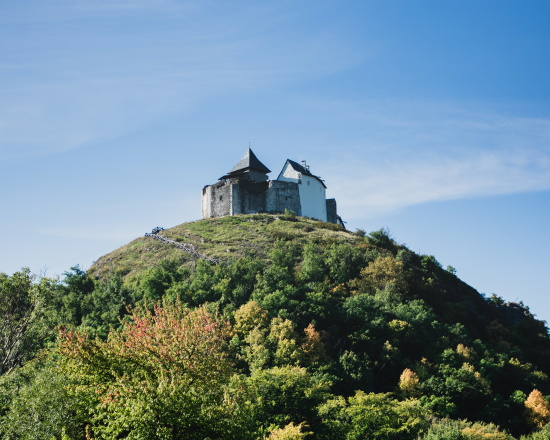
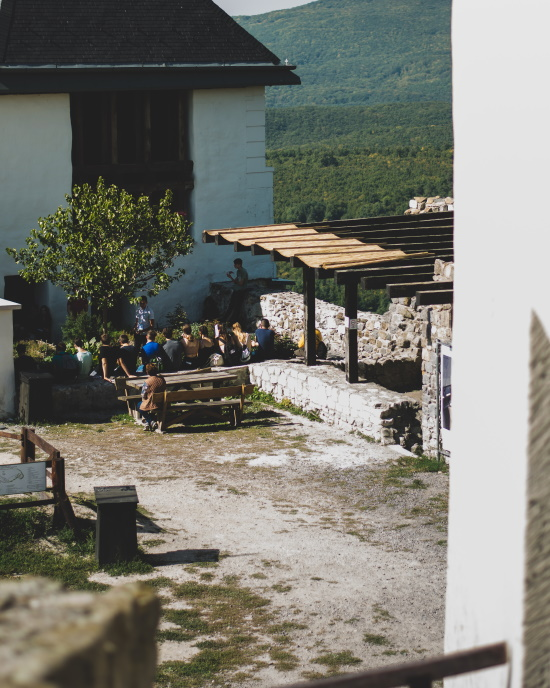

A füzéri vár középkori vár, amely Füzér település közvetlen közelében emelkedő vulkanikus eredetű hegyen áll. Első írásos említése 1264-ből származik, bár valószínűleg már a tatárjárás előtt állt. A feltételezések szerint az Aba nemzetség építtette az Árpád-korban, különlegessége, hogy egyike lehet az első magyarországi magánbirtokú kőváraknak.
A 13. században II. András megvette a várat, amely a tatárjárásig a királyi birtoktest részét képezte, majd adományozás útján visszakerült az Abákhoz. A rozgonyi csata után Károly Róbert elkobozta, és Drugeth-, majd Perényi-tulajdonba került.
Amikor Perényi Gábor 1567-ben fiúutód nélkül meghalt, a vár előbb a Báthori, majd a Nádasdy családhoz került. A Wesselényi-összeesküvés után a várat elkobozták, majd a császári katonaság felégette és hátrahagyta.
1977-től régészeti feltárásokat végeztek, 1992-től renoválási munkák kezdődtek, 2014–16 között pedig felépült az úgynevezett alsóvár, megújult a felsővár várkápolnája, palotaszárnya és alsó bástyája is, így ma Magyarország egyik legjobb állapotú középkori vára.